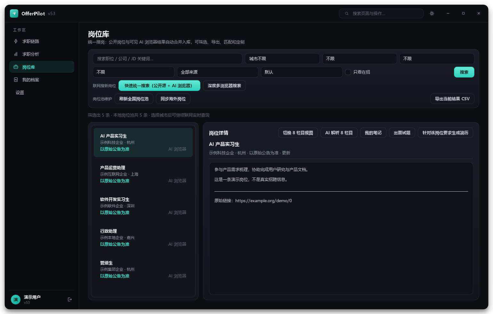
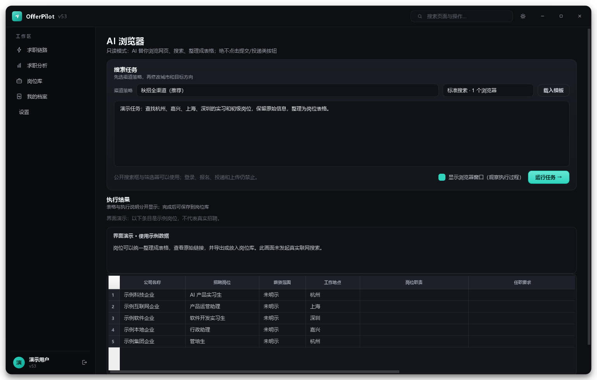

01
机会，多找一层。
从公开招聘页面、企业官网，到地方公告。用 AI 浏览器辅助查看信息，让搜索不止于一个岗位名称。
企业招聘公共就业国企公告校招实习
可用结果受站点开放程度及访问限制影响。YOUR NEXT CHAPTER
求职，不必在无数个页面之间独自摸索。
让 AI 帮你找机会、理信息、准备简历，
把精力留给真正值得奔赴的工作。

不只回答问题。
把下一步，也准备好。
01 / LESS FRICTION
收藏夹、招聘页面、文档和聊天框。
那些来回切换的时刻，
现在有了一个共同的工作台。
从公开招聘页面、企业官网，到地方公告。用 AI 浏览器辅助查看信息，让搜索不止于一个岗位名称。
搜索结果可整理为结构化岗位，汇入岗位库。对照城市、公司和要求慢慢筛选，也可以导出表格继续整理。
围绕真实岗位要求，梳理已有经历，辅助改写简历、准备面试。内容可核对、可编辑，再由你决定最终版本。
AI 辅助表达，不代替真实经历与个人判断。02 / INSIDE OFFERPILOT
不是只给一句建议。
信息在哪里、岗位是什么、下一步做什么，
在工作台里逐一展开。

例如“杭州的产品运营实习”。补充城市、经验与个人偏好，让方向更清楚。
通过岗位库与联网搜索浏览机会，对照原始招聘页面，判断是否适合自己。
导入自己的简历，围绕岗位要求调整表达，再用面试练习查漏补缺。
保存材料与求职笔记，持续跟进。报名与投递由你亲自确认和完成。
04 / A FEW THINGS TO KNOW
把边界说清楚，
才能用得更安心。
运行所需组件已包含在安装包中。
此页面提供软件预览版下载，不代售模型服务。AI 分析、简历生成等功能需要你在设置中填写自己的 DeepSeek API Key，费用和可用额度以模型服务商为准。额度不足时，相关 AI 功能会无法运行。
产品通过公开招聘信息和浏览器辅助搜索收集岗位。可获取的范围取决于站点是否开放、登录限制、网络情况等，不承诺覆盖所有城市的全部岗位。请以原始招聘公告为准；报名、上传材料和投递需要你自行确认完成。
不会。这是静态宣传与下载网站，没有简历上传入口。桌面软件中的材料在本机保存；使用 AI 生成或分析时，相关简历文字、岗位要求和提示内容会发送给你配置的模型服务。请先脱敏，避免输入不必要的敏感信息。
v53 提供演示登录：账号 demo，密码 demo1234（中间没有空格）。演示账号不包含可共享的模型 Key。正式使用自己的资料时，建议创建个人账号；此网站本身无需注册。
你可以在手机上浏览这个网站。当前下载文件是 Windows 桌面版，不能直接在 Android、iPhone、macOS 或 Linux 上运行。请在 Windows 电脑上下载和安装。